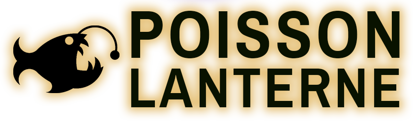

Présentation et contexte
Au cours de ma deuxième année de Master en Imagerie et 3D, nous avions eu un projet à réaliser en groupe sur une durée de 150 heures en lien avec notre formation. Moi et mon équipe avons fait le choix de créer un jeu d'énigmes reposant sur la manipulation de la lumière, que nous avons appelé Poisson Lanterne.
Le joueur explore des environnements mystérieux muni d'un poisson lumineux qu'il peut configurer (couleur RGB, mode de projection) pour résoudre des puzzles basés sur des phénomènes optiques réels : réflexion, absorption et fluorescence.
Mon rôle dans le projet
J'ai touché à plusieurs aspects du projet, mais mes contributions principales ont été la modélisation 3D, l'animation et le sound design.
Avec Blender, j'ai modélisé et animé le Poisson Lanterne avant de l'exporter et de l'intégrer dans Unreal Engine 5. Sur la partie audio, j'ai travaillé sous FL Studio pour les ambiances sonores et les bruitages associés aux interactions du joueur.
En parallèle, j'ai travaillé sur le world building du jeu : définir l'identité de l'univers, son ambiance générale et m'assurer que les environnements, la lumière et le son racontent tous la même chose.
Démonstrations techniques
Voici quelques démonstrations des aspects du projet sur lesquels j'ai principalement travaillé :
Modélisation 3D
J'ai modélisé plusieurs éléments clés du jeu : les cristaux interactifs utilisés dans les énigmes, l'entrée du temple et le piédestal sur lequel repose le poisson. Les textures ont été gérées et ajustées directement dans Unreal Engine.
Menu et UI
Je me suis occupé du design et de l'implémentation des menus du jeu : style visuel, disposition des éléments et intégration dans Unreal Engine.
Effets sonores et musiques
J'ai composé les musiques originales du jeu en cherchant une atmosphère cohérente avec l'univers visuel. Les effets sonores ont été créés à partir de samples retravaillés et d'enregistrements personnels.
Rigging et Animation du Poisson Lanterne
Je me suis occupé du rigging et de l'animation du Poisson Lanterne (création du squelette ,animation idle et de tir) pour lui donner une présence naturelle et vivante dans l'environnement du jeu.
Animations des bras
J'ai créé les animations des bras à la première personne : tir, marche et pick up. Une fois les animations réalisées sous Blender, je les ai exportées et intégrées dans Unreal Engine 5 pour les connecter aux mécaniques du jeu.
Galerie Photo
Video de gameplay
Bilan
Ce projet m'a permis de consolider mon pipeline Blender vers Unreal Engine 5, notamment sur les questions d'export pour le temps réel. C'est aussi le projet sur lequel j'ai le plus travaillé le sound design, un aspect que j'ai eu envie de creuser davantage par la suite.